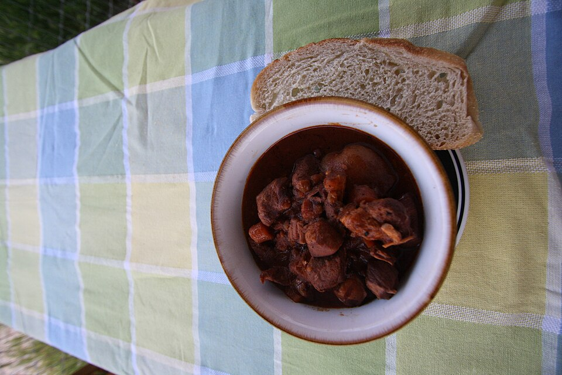

Carnes · Outros
Avestruz à la bourguignonne

Ingredientes
- 1 kg de filé de avestruz em cubos
- 1 cebola média, 2 dentes de alho, 1 cenoura
- Sal e pimenta-branca
- 120 g de bacon; 240 g de champignon; 240 g de cebolinhas brancas em conserva
- 4 folhas de louro; 450 ml de vinho tinto seco; 500 ml de caldo de frango; 20 ml de purê de tomate
- 40 g de farinha; 600 ml de óleo; 30 g de manteiga; 4 ramos de tomilho; 12 g de salsa
Modo de preparo
- Tempere a carne com metade da cebola, alho, cenoura, sal e pimenta.
- Frite o bacon; refogue o restante dos aromáticos com champignon, cebolinhas, louro, vinho, caldo e purê ~10 min.
- Passe a carne na farinha, doure e junte ao molho ~20 min; finalize com manteiga. Sirva com tomilho e salsa (acompanhe arroz selvagem).